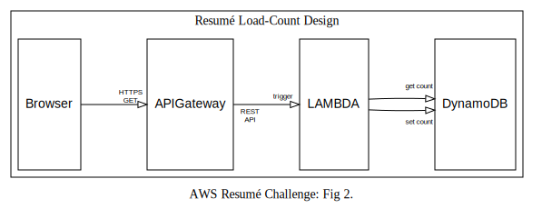
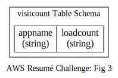
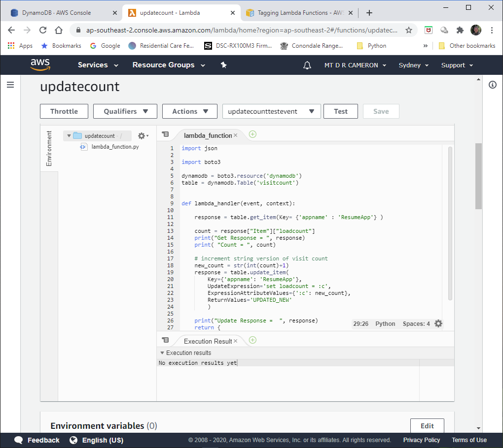
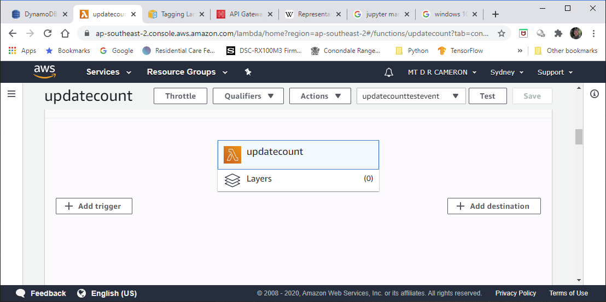
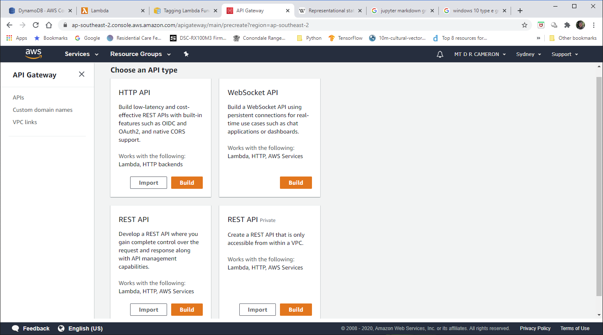
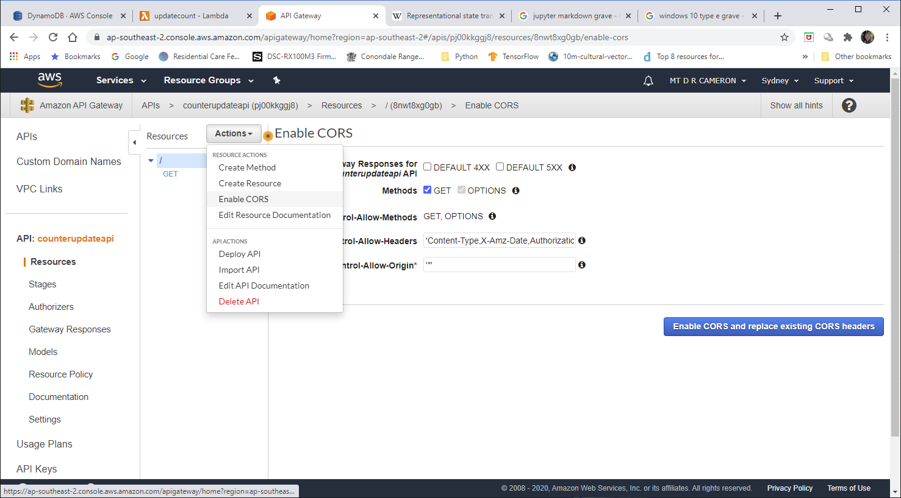
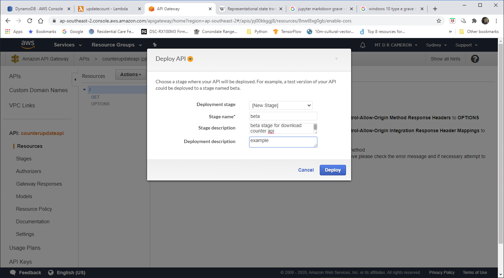
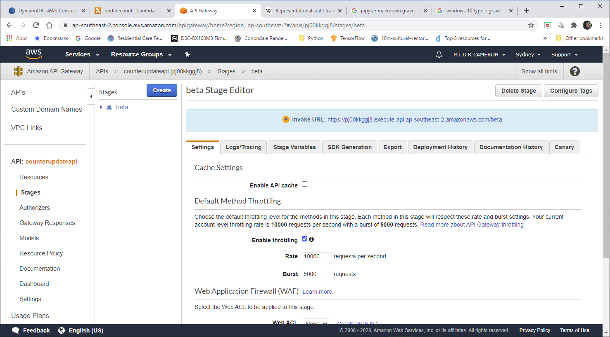
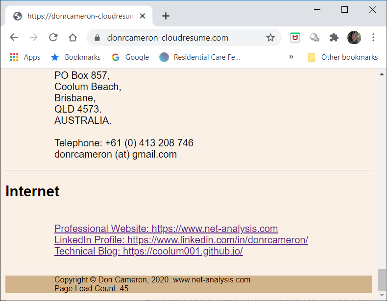
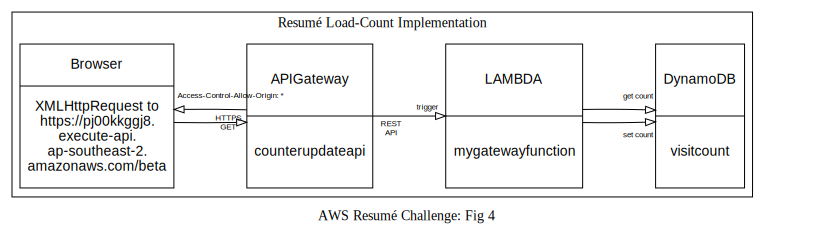

Cloud Resume Challenge Part 2
AWS Cloud Resume Challenge: Part 2¶
!dot -o images/arch-02.svg -T svg arch-02.txt
!dot -o images/arch-03.svg -T svg arch-03.txt
!dot -o images/arch-04.svg -T svg arch-04.txt
Introduction¶
I decided to respond to the Cloud Resume Challenge. This was a challenge to put your resume up on the Internet, in a fully cloud-enabled way, using Amazon Web Services (AWS) offerings (see https://cloudresumechallenge.dev/). I found it interesting, a little bit challenging, and am learning more about AWS.
Previously¶
In the first part, I successfully created an AWS S3 Bucket, and stored my HTML and CSS Content there. Then I created a Domain Name via AWS Route53 specifically for the resume (see https://donrcameron-cloudresume.com/), and pointed the Domain Name DNS resolution to a CloudFront entrypoint. CloudFront then acted as an Edge cache for my S3 Bucket Content. CloudFront was instructed to only allow HTTPS access (redirecting HTTP traffic), so I needed to use AWS Certificate Manager to create my SSL certificates.
The Next Steps¶
In this part, the requirement calls for a page-load counter. I use a Javascript script to access an AWS Lambda via AWS Gateway API. The Lambda reads a counter from a DymamoDB database, increment and updates the counter, and returns the counter to the Gateway API. The Javascript script get the counter, and writes it into a field in the webpage.

DynamoDB Database¶
The database design was simplicity personified. I wanted just one integer to be stored persistently, to be updated when needed.
Naturally, there were some decisions to be made: the first of which was "Which region should store the database?". I evenetually decided to use the Second Asia-Pacific SouthEast Region (read Sydney). This is the nearest to where I am located, and this is just a vanity project after all.
I also decided to generalize the database a trifle, and support loading counters for a range of webpages and applications. So the primary key is the application or webpage name, and the counter is stored in loadcount. I learnt the hard way that in DataBase land, count is a reserved word.

The AWS Console view of the table is below.
{kind=link}
The AWS Console view of the contents is as below. I have only one counter running (ResumeApp), and at the time of this snapshot, it had been downloaded 17 times.
{kind=link}
Lambda¶
The next step is for a AWS lambda (when triggered) to read the database, and return the current value to the caller after incrementing the value and rewriting to the database.
We can drill down into the Python code via the AWS Console. Again, be sure to set the correct region. The first screen shows us all our Lambda Functions we have defined.
{kind=link}
Drilling down to our Lambda for the Challenge, we get

{kind=link}
The actual code is:
import json
import boto3
dynamodb = boto3.resource('dynamodb')
table = dynamodb.Table('visitcount')
def lambda_handler(event, context):
response = table.get_item(Key= {'appname' : 'ResumeApp'} )
count = response["Item"]["loadcount"]
print("Get Response = ", response)
print( "Count = ", count)
# increment string version of visit count
new_count = str(int(count)+1)
response = table.update_item(
Key={'appname': 'ResumeApp'},
UpdateExpression='set loadcount = :c',
ExpressionAttributeValues={':c': new_count},
ReturnValues='UPDATED_NEW'
)
print("Update Response = ", response)
return {
'statusCode': 200,
'body': new_count
}
#end lambda_handler
boto3 is the AWS Python support library. We initialize by getting the dynbamodb resource, and then getting our table within dynamodb.
Hitting the Test button gives us:
Execution result: succeeded(logs)
Details
The area below shows the result returned by your function execution. Learn more about returning results from your function.
{
"statusCode": 200,
"body": "18"
}
Summaryand in our logs we have:
Log output
The section below shows the logging calls in your code. These correspond to a single row within the CloudWatch log group corresponding to this Lambda function. Click here to view the CloudWatch log group.
START RequestId: 725ae498-fcf1-4f03-8f3a-2bf1474aaa79 Version: $LATEST
Get Response = {'Item': {'appname': 'ResumeApp', 'loadcount': '17'}, ...
Count = 17
Update Response = {'Attributes': {'loadcount': '18'}, ...In this current design, we have hard-coded the App Name in the Lambda, so there is no need for any parameter to be passed in. The next iteration would have the counter name to be a parameter to be passed in, to select the correct row in the database.
Taking out the debug code, we get:
import json
import boto3
dynamodb = boto3.resource('dynamodb')
table = dynamodb.Table('visitcount')
def lambda_handler(event, context):
response = table.get_item(Key= {'appname' : 'ResumeApp'} )
count = response["Item"]["loadcount"]
# increment string version of visit count
new_count = str(int(count)+1)
response = table.update_item(
Key={'appname': 'ResumeApp'},
UpdateExpression='set loadcount = :c',
ExpressionAttributeValues={':c': new_count},
ReturnValues='UPDATED_NEW'
)
return {
'statusCode': 200,
'body': new_count
}
#end lambda_handler
Browser Code¶
To jump to the other end of the chain, the browser script that calls the Lambda function (strictly speaking, calls the AWS Gateway API that triggers the Lambda) is shown below:
<script>
function getLoadCount(){
// call an AWS gateway API, that then calls an AWS Lambda
// to read and then update AWS DynamoDB item showing load count
// Note call is synchronous, delays should be minimal
var req = new XMLHttpRequest();
req.open('GET',
"https://cimk9zx0ch.execute-api.ap-southeast-2.amazonaws.com/beta",
false);
req.send();
if(req.status == 200)
{
len = req.responseText.length;
// response text has opening and closing double quotes
console.log(req.responseText.substring(1, len-1));
// set field in footer
document.getElementById("loadcount").textContent =
req.responseText.substring(10, len-2);
}
else {
// NOT OK response, so log in console
console.log(req.status)
}//end if
}// end getLoadCount
// read and write visit count into footer, then increment count in DB
window.onload = function(){
// side effects
// getLoadCount() updates field in footer, increments count in DB
getLoadCount();
}; //end window.onload
</script>
The field where we display the download count is discretely in the footer of the webpage
<footer>
<p>
Copyright © Don Cameron, 2020. www.net-analysis.com<br/>
Page Load Count: <span id="loadcount">Not Available</span><br/>
</p>
</footer>
The window.onload function causes our getLoadCount function to be called. This in turn call an AWS Gateway API, which will call our Lambda. The response from the ASW Gateway API is a " enclosed string: we have to strip off these before writing it into out page footer field.
There is a huge gotcha that is hidden in the above. In order to supress sneaky scripts, browsers will (by default) prevent a webpage loading any material via XMLHttpRequest from any other webpage in a different domain. And since I am trying to allow the whole world access to the resume (or else what use is it?), this would prevent the webpage working as intended.
Happily, there is a mechanism to allows what is called Cross-origin resource sharing (see Wikipedia for a good explanation of CORS). The site serving the requested page can indicate that it is open to the whole world accessing its content by responding with HTTP Header of type Access-Control-Allow-Origin. If the browser does an initial OPTIONS request, and the response includes the magic allow-all header, then the Javascript is allowed to run.
There is another gotcha in that I have chosen to make my XMLHttpRequest call to be synchronous (wait till data returned). I get dire warnings in the Browser Javascript console about how this is not best practice.
[Deprecation] Synchronous XMLHttpRequest on the main thread is deprecated because of its detrimental effects to the end user's experience.Because I am only performing minimal data processing, I feel free to ignore these warnings, as it makes the Javascript code so much simplier.
And that brings us to the final part of the processing chain, the AWS API Gateway.
AWS Gateway API¶
I must admit that I had the most trouble with configuring up the API Gateway. getting an API Gateway to trigger the Lambda was very easy; the harder part was getting CORS working.
You can create an API Gateway instance in the AWS Console in at least two ways. The first is the Add Trigger button on the Lambda main screen.

{kind=link}
followed by
{kind=link}
However, try as I might, could not get the resulting API Gateway instance to return the correct CORS headers, even when I ticked all the boxes I could find that requested CORS being enabled. There was some advice that it was up to the developer to return them in the response from the Lambda function, but my cut-and-paste code did not seem to do anything.
The next attempt (eventually successful) was to create a API Gateway instance from scratch, and then link it to my Lambda function.
When you ask to create an API Gateway instance from the console, you are presented with a number of choices, as below

{kind=link}
The choice I got to work was the REST API.
{kind=link}
{kind=link}
{kind=link}
We now specify that we want to let browsers know that cross-site access is OK

{kind=link}
{kind=link}
{kind=link}
{kind=link}
We have to specify a stage for this deployment.
A proper structure would be to have DEV, TEST, and PROD. For this prototype, I run with beta

{kind=link}
We get a summary of the deployment. If I was doing this for real, I would be vitally interested in the constraints on how to handle peak loads (and peak bills). But this API is unlikely to get massive usage, and I have AWS Budget alerts to manage my budget, and performance is not really an issue.

{kind=link}
Bewlow we see the results of a test run, with the Page Load Counter being increment on a reload of my web-page

{kind=link}
{kind=link}
{kind=link}
Conclusions¶
In the end, my implementation looks like

The biggest hurdle was in getting CORS working in the API Gateway.
In general, I have neglected to design a process for developing and testing, and then pushing into production. I will cover that in the next stage of the Challenge, Infrastrucure as Code. I suspect that I will use AWS Serverless Application Model scripting to set this up.